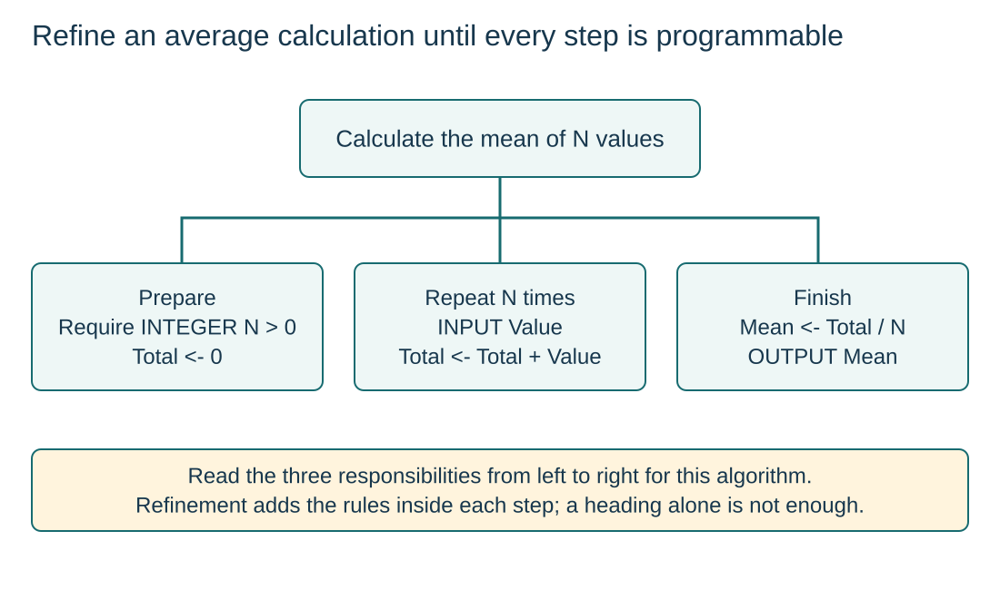

Expand the unresolved operations
S9.08.A01
Visual overview
Refine an average calculation until every step is programmable

Visual transcript
- The high-level task is to calculate the mean of N values, where N is a positive integer.
- Refinement defines initialisation, repeated input and accumulation, then division and output.
- N > 0 is a precondition: division by zero is not a valid refinement for an empty input set.
Core explanation
Expand a high-level solution
- Start from the result: Name the required outcome and its preconditions.
- Expand an unresolved step: Replace it with operations that achieve the same result.
- Continue to programmable detail: Stop when no remaining action requires the programmer to invent a missing rule.
Add rules, not just headings
Decomposition identifies smaller sub-problems; refinement develops the internal detail of a solution. For an average, specify how inputs are read, how Total is updated and when division happens. For the diagram’s algorithm, N must be positive.
Refine one unfinished leaf at a time
- InspectFind a step whose rule or order is still unspecified.
- ExpandReplace it with enough smaller operations to perform that task.
- ReconnectKeep the surrounding inputs, dependencies and outputs consistent.
- StopCheck that every leaf has an implementable operation and stated conditions.